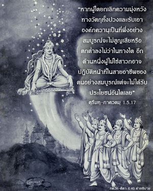

องค์ภควานตรัสว่า โอ้ โอรสพระนาง ปฺฤถา นักทิพย์นิยมผู้ปฏิบัติกิจกรรมอันเป็นมงคลจะไม่พบกับความหายนะ ไม่ว่าในโลกนี้หรือในโลกทิพย์ สหายของข้า! คนทำดีจะไม่มีวันถูกความชั่วครอบงำ

ใน ศฺรีมทฺ-ภาควตมฺ (1.5.17) ศฺรี นารท มุนิ กล่าวสอน วฺยาสเทว ดังต่อไปนี้
ตยักตวา สวะ-ธรรมัม จะระณามพุชัม หะเรร
ภะชันน อะปักโว ’ถะ ปะเตต ตะโต ยะทิ
ยะตระ กวะ วาภะทรัม อะภูท อะมุษยะ กิม
โก วารถะ อาปโต ’ภะชะตาม สวะ-ธรรมะตะห์
“หากผู้ใดยกเลิกความมุ่งหวังทางวัตถุทั้งปวง และรับเอาองค์ภควานฺเป็นที่พึ่งอย่างสมบูรณ์จะไม่สูญเสีย หรือตกต่ำลง ไม่ว่าในทางใด อีกด้านหนึ่ง ผู้ที่ไม่ใช่สาวกอาจปฏิบัติหน้าที่ในสายอาชีพของตนอย่างสมบูรณ์ แต่จะไม่ได้รับประโยชน์อันใดเลย” สำหรับความมุ่งหวังทางวัตถุมีกิจกรรมมากมายทั้งตามพระคัมภีร์ และตามประเพณี นักทิพย์นิยมควรยกเลิกกิจกรรมทางวัตถุทั้งมวลเพื่อความเจริญก้าวหน้าแห่งชีวิตทิพย์ หรือกฺฤษฺณจิตสำนึก เขาอาจเถียงว่ากฺฤษฺณจิตสำนึกบรรลุถึงความสมบูรณ์สูงสุดได้หากปฏิบัติอย่างสมบูรณ์ แต่ถ้าหากว่าไม่บรรลุถึงระดับสมบูรณ์นี้จะสูญเสียทั้งทางวัตถุ และทางจิตวิญญาณ ได้กล่าวไว้ในพระคัมภีร์ว่า เขาต้องรับทุกข์จากผลกรรมที่ไม่ปฏิบัติตามหน้าที่ที่กำหนดไว้ ฉะนั้น ผู้ที่ไม่ปฏิบัติกิจกรรมทิพย์อย่างเหมาะสมจะได้รับผลกรรมเหล่านี้ ภาควต ได้ยืนยันว่า นักทิพย์นิยมผู้ไม่ประสบผลสำเร็จไม่จำเป็นต้องวิตกกังวล ถึงแม้อาจได้รับผลกรรมที่ปฏิบัติตามหน้าที่อย่างสมบูรณ์ก็จะไม่สูญเสียอะไร เพราะกฺฤษฺณจิตสำนึกเป็นสิริมงคลจะไม่มีวันถูกลืม และผู้ได้ปฏิบัติเช่นนี้จะปฏิบัติต่อไป แม้หากเขาเกิดมาต่ำต้อยในชาติหน้า อีกด้านหนึ่ง หากบุคคลปฏิบัติตามหน้าที่ที่กำหนดไว้อย่างเคร่งครัด แต่ไม่มีกฺฤษฺณจิตสำนึก จะไม่ได้รับผลอันเป็นมงคล
คำอธิบายเข้าใจได้ดังต่อไปนี้ มนุษยชาติอาจแบ่งออกได้เป็นสองพวก คือ พวกที่มีกฎเกณฑ์ และพวกที่ไม่มีกฎเกณฑ์ พวกที่เพียงแต่ปฏิบัติตนเพื่อสนองประสาทสัมผัสเยี่ยงสัตว์เดรัจฉานโดยปราศจากความรู้ของชาติหน้า หรือความหลุดพ้นแห่งดวงวิญญาณ เป็นพวกที่ไม่กฎเกณฑ์ ส่วนพวกที่ปฏิบัติตามหลักธรรมแห่งหน้าที่ที่กำหนดไว้ในพระคัมภีร์ เป็นพวกที่มีกฎเกณฑ์ พวกไม่มีกฎเกณฑ์ทั้งศิวิไล และไม่ศิวิไล มีการศึกษา และด้อยการศึกษา แข็งแรง และอ่อนแอทั้งหมดเต็มไปด้วยนิสัยของสัตว์เดรัจฉาน กิจกรรมของพวกนี้ไม่เคยเป็นมงคล เพราะขณะที่เพลิดเพลินกับนิสัยเยี่ยงสัตว์เดรัจฉาน ในการกิน นอน ป้องกันตัว และเพศสัมพันธ์ พวกเขาจะยังคงมีความเป็นอยู่ทางวัตถุชั่วกัลปวสาน ซึ่งมีแต่ความทุกข์ อีกด้านหนึ่ง พวกมีกฎเกณฑ์ตามคำสั่งสอนของพระคัมภีร์จะค่อยๆ เจริญขึ้นมาสู่กฺฤษฺณจิตสำนึก ชีวิตจะเจริญก้าวหน้าอย่างแน่นอน
พวกที่ปฏิบัติตามวิธีอันเป็นมงคลแบ่งได้เป็นสามกลุ่ม คือ (1) กลุ่มที่ปฏิบัติตามกฎเกณฑ์ของพระคัมภีร์ และได้รับความสุขจากความมั่งคั่งทางวัตถุ (2) กลุ่มที่พยายามค้นหาเสรีภาพสูงสุดจากความเป็นอยู่ทางวัตถุ และ (3) กลุ่มที่เป็นสาวกในกฺฤษฺณจิตสำนึก กลุ่มที่ปฏิบัติตามกฎเกณฑ์ของพระคัมภีร์เพื่อความสุขทางวัตถุ อาจแบ่งต่อไปอีกได้เป็นสองกลุ่มย่อย คือ กลุ่มที่ทำงานเพื่อผลประโยชน์ทางวัตถุ และกลุ่มที่ไม่ปรารถนาผลทางวัตถุเพื่อสนองประสาทสัมผัส พวกที่ปรารถนาผลทางวัตถุเพื่อสนองประสาทสัมผัส อาจพัฒนาคุณภาพชีวิตให้สูงขึ้นจนกระทั่งไปถึงดาวเคราะห์ที่สูงกว่า แต่ถึงกระนั้น เนื่องจากไม่ได้เป็นอิสระจากความเป็นอยู่ทางวัตถุเพื่อสนองประสาทสัมผัส อาจพัฒนาคุณภาพชีวิตให้สูงขึ้นจนกระทั่งไปถึงดาวเคราะห์ที่สูงกว่า ถึงกระนั้น เนื่องด้วยไม่ได้เป็นอิสระจากความเป็นอยู่ทางวัตถุ จึงไม่ได้ปฏิบัติตามวิถีทางอันเป็นมงคลอย่างแท้จริง กิจกรรมอันเป็นมงคลคือกิจกรรมที่นำไปสู่ความหลุดพ้นเท่านั้น กิจกรรมใดๆ ที่ไม่มุ่งไปที่ความรู้แจ้งแห่งตน หรือความหลุดพ้นจากแนวคิดชีวิตทางวัตถุในที่สุดจะไม่เป็นมงคลเลย กิจกรรมในกฺฤษฺณจิตสำนึกเป็นกิจกรรมเดียวที่เป็นมงคล และผู้ใดอาสายอมรับความไม่สะดวกสบายทางร่างกายทั้งมวลเพื่อความเจริญก้าวหน้าบนวิถีแห่งกฺฤษฺณจิตสำนึก สามารถเรียกได้ว่าเป็นนักทิพย์นิยมที่สมบูรณ์ภายใต้ความสมถะอย่างเคร่งครัด เพราะระบบโยคะแปดระดับจะนำมาสู่ความรู้แจ้งแห่งกฺฤษฺณจิตสำนึกในที่สุด การฝึกปฏิบัติเช่นนี้เป็นมงคลเช่นกัน ผู้ใดที่พยายามอย่างดีที่สุดในเรื่องนี้ไม่จำเป็นต้องกลัวตกลงต่ำ